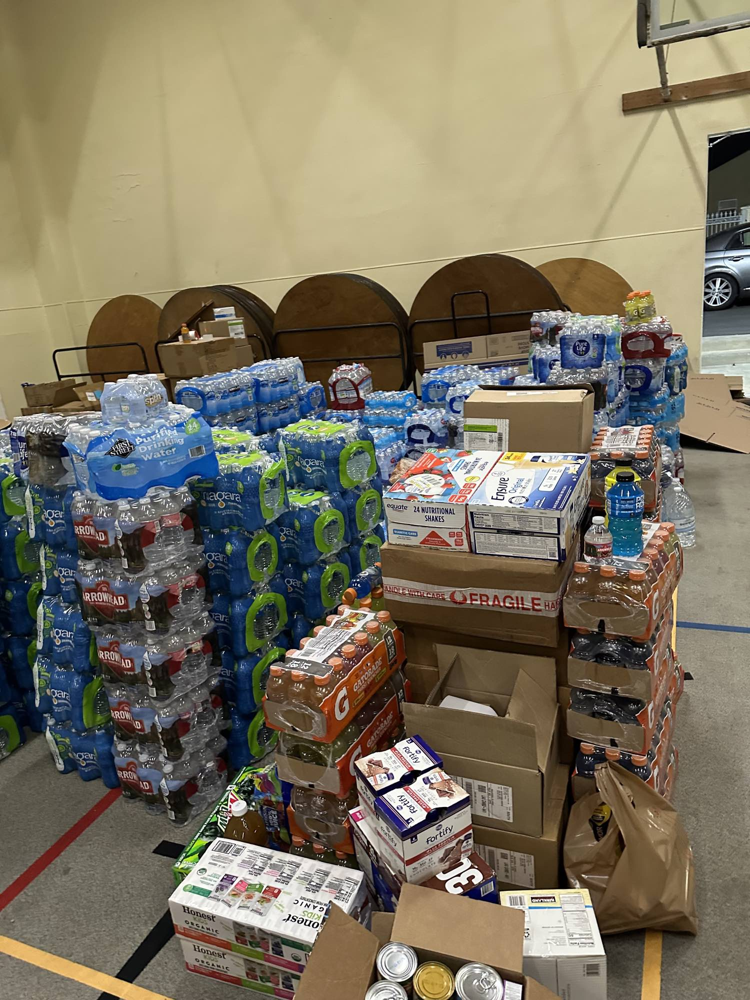
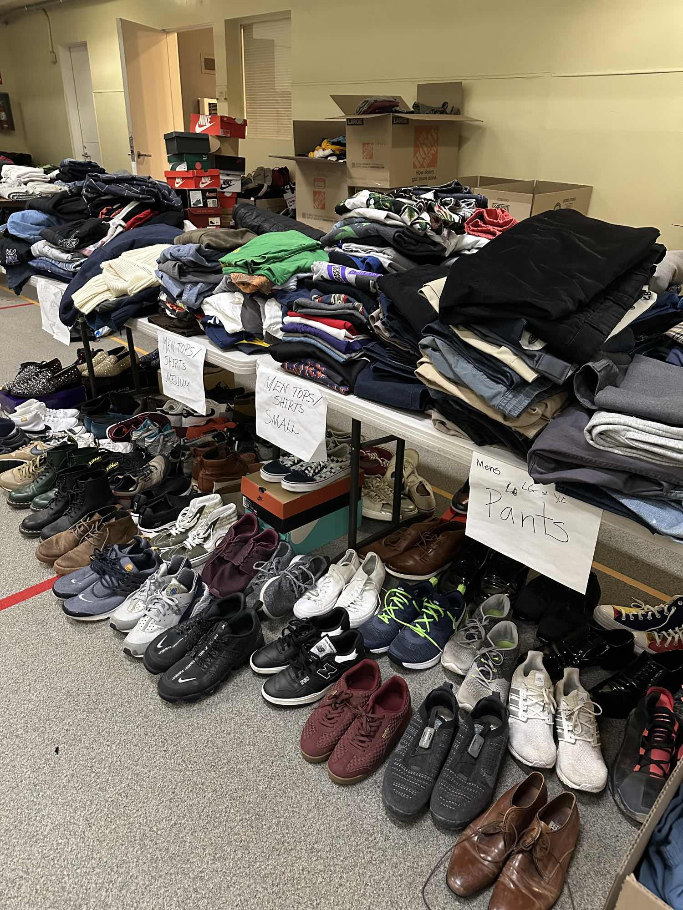
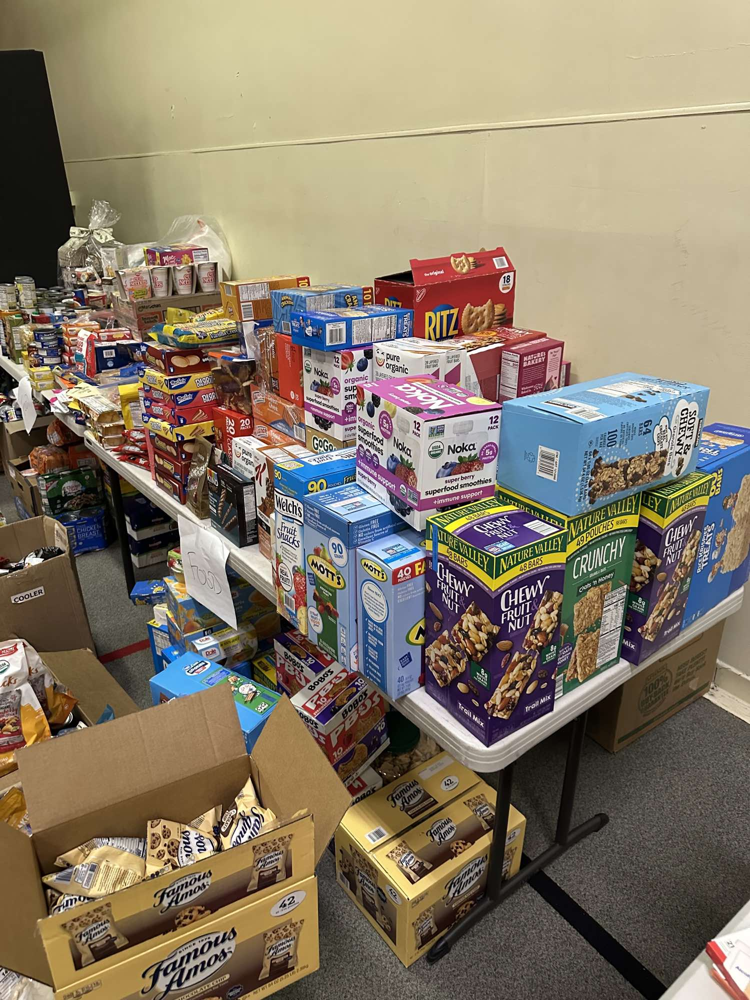
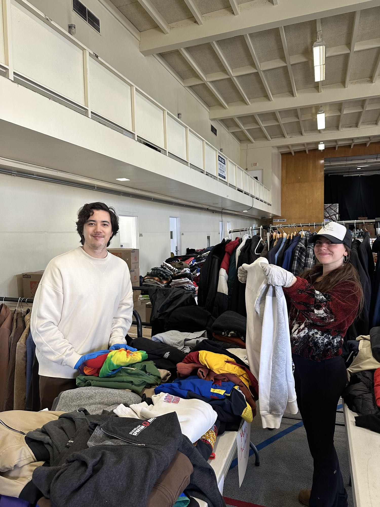
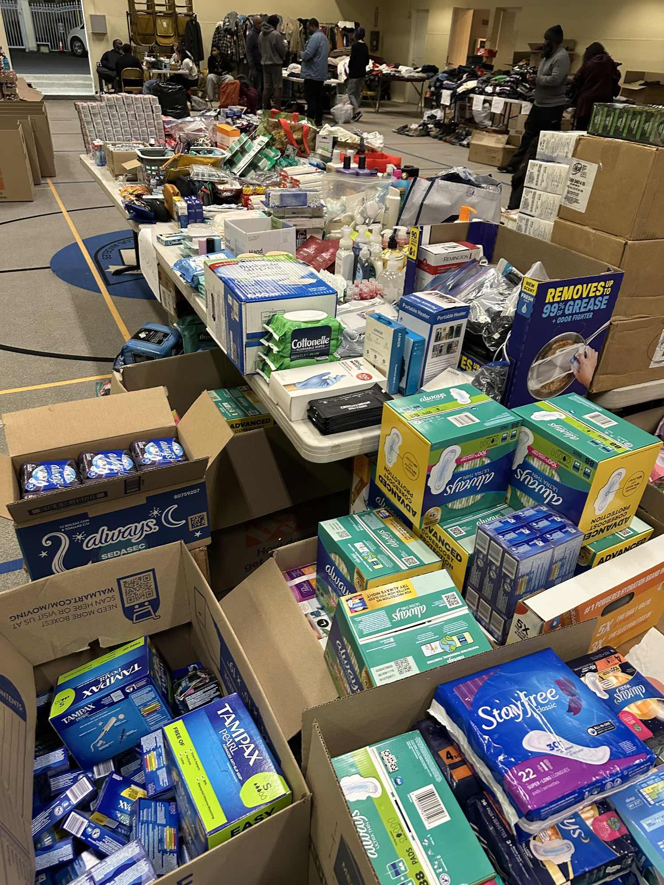
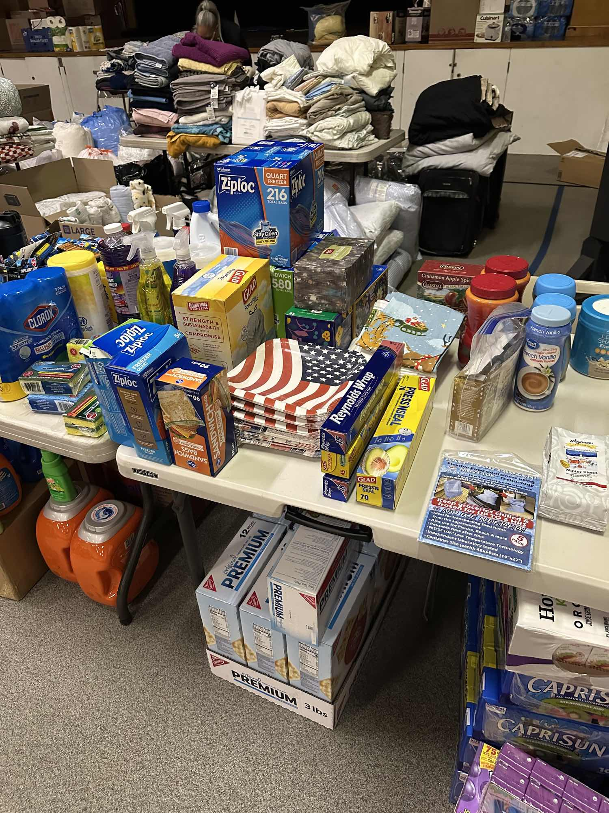
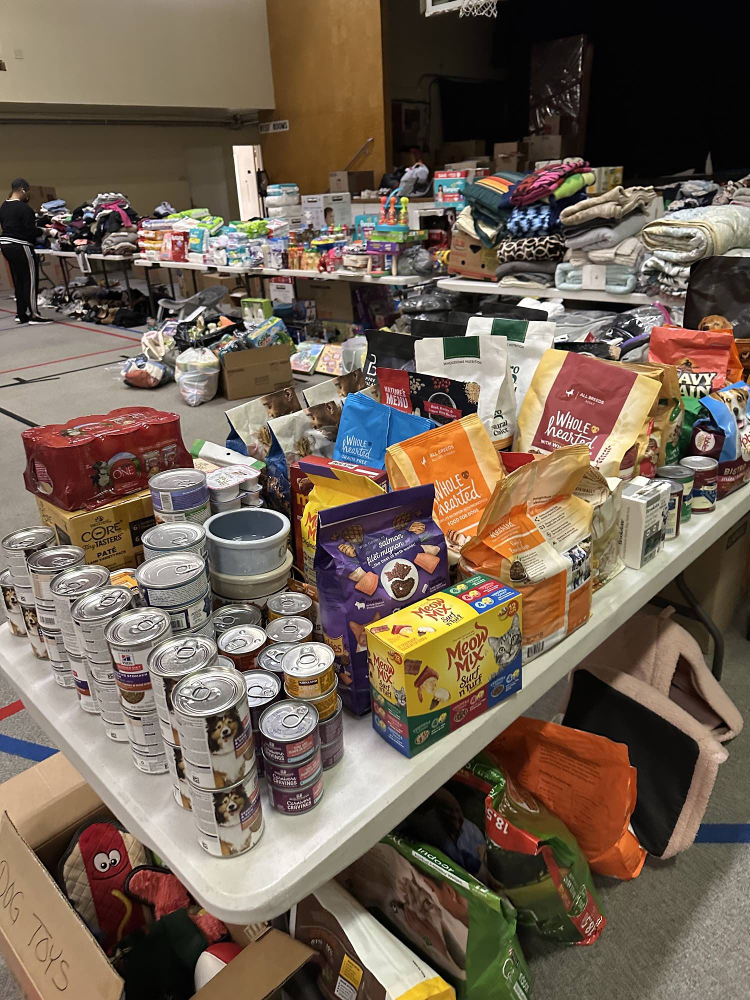

Born to respond
The first disaster we answered was the one we were founded in.
Health Matters Clinic opened in 2020, at the height of COVID-19. Nobody filed that work under disaster response at the time. In substance, that is what it was.
The earliest HMC events were community days that put several kinds of help in one place on one afternoon. COVID-19 testing. Vaccinations. Health screenings. Mental health support. And access to digital devices.
The devices are the part people forget. In 2020 a working device was the only way to see a clinician, because care had moved to telehealth. It was the only way to search for work and, for a lot of people, the only way to do the work. It was the only way a child could attend school. A household without one was not inconvenienced. It was cut off from care, from income and from education at the same time, for as long as the closures held. Putting a device into someone's hands was medical access, employment access and schooling in a single motion.
Three years later a state agency asked HMC to sit at the preparedness table. In September 2023 the California Governor's Office of Emergency Services, Cal OES, invited HMC to participate in its Regional Disaster Ready Summit for Los Angeles County, held on September 27 at the Skirball Cultural Center. It was one of eight summits Cal OES ran across the state that month. HMC attended and participated. HMC holds no Cal OES certification, credential or partnership.
Then a third kind of disaster. On January 18, 2025, with the Los Angeles wildfires still burning, HMC ran the L.A. Wildfire Relief Response. 198 volunteers, 36 partner organizations, one day. That response was the third instance of a pattern, not the beginning of one.
The summit
- Agency
- California Governor's Office of Emergency Services, Cal OES, a state agency
- Event
- Regional Disaster Ready Summit, Los Angeles County
- Date
- September 27, 2023
- Venue
- Skirball Cultural Center, Los Angeles
- Series
- One of eight summits Cal OES held across California that month
- Convened
- Community-based organizations, local governments, state partners and other stakeholders, more than 650 people across the eight summits
- Objectives
- Grow community understanding of the emergency response system, and connect community organizations with the local emergency response staff who run it
- HMC's role
- Invited by Cal OES to participate. Attendee and participant. HMC is not a Cal OES certified, trained, credentialed, or partner agency.
- Source
- Cal OES, Regional Disaster Ready Summits
Born in a disaster
Community events delivering COVID-19 testing, vaccinations, health screenings, mental health support, and access to digital devices, when a device was the only route to care, work and school.
Invited to the state table
Cal OES invited HMC to participate in the Regional Disaster Ready Summit for Los Angeles County at the Skirball Cultural Center, one of eight held statewide.
Another kind of disaster
The L.A. Wildfire Relief Response ran on January 18, 2025, from 8:00 AM to 8:00 PM. Twelve hours, 198 volunteers, 36 organizations.



January 18, 2025
One day, by the numbers.
Twelve hours at one site. Every figure below comes from the L.A. Wildfire Relief Response impact report.
Individuals and families received direct assistance.
Volunteers deployed, including health professionals, logistics teams, and community coordinators.
Hours of service contributed by those volunteers across a twelve hour operating day.
Partner organizations collaborated to coordinate distribution and extend reach.
Essential items distributed, including food, hygiene kits, and medical supplies.
Deliveries made to displaced individuals and to organizations distributing onward to affected populations.
“The ability to deliver supplies to homebound seniors was crucial. Many had no way to access relief centers.”
Community partner organization
“I volunteered because I wanted to give back. Seeing the relief on people’s faces when they received supplies made every moment worthwhile.”
Volunteer
Relief item needs
What people actually asked for.
29 people ranked the items they needed most. Baby wipes, disinfectant wipes, cleaning supplies, and bottled water all came in above 80 percent. Nonperishable food ranked eighteenth, at 51.72 percent.
Hygiene and cleaning supplies outranked food by a wide margin. That is not what most people picture when they picture disaster relief. What people were doing was making a displaced or smoke-damaged space livable again, keeping a baby clean, and staying well enough to deal with everything else.
A food drive alone would have missed most of it. Respondents could select more than one item, and percentages are of the 29 people surveyed.
Ranked needs, 1 to 12
Blue bars mark the four items above 80 percent.
Ranked needs, 13 to 23
Food, clothing, and school items sit below every hygiene category.
Operations
How one day reached that many people.
120 individuals and families sought support. Of them, 78 households required immediate relief items. Thirty-six nonprofit and community organizations coordinated distribution. That is what turned a single site into county-wide reach.
The event ran from 8:00 AM to 8:00 PM, twelve hours of continuous service. Volunteers included health professionals, logistics teams, and community coordinators. Sixteen deliveries went out to displaced individuals and to organizations who distributed onward, because the people most cut off from a relief site are the ones least able to travel to it.
In-kind donations exceeded $200,000. That is how 980 items moved in a day with no procurement budget behind them.
The day at a glance
- Date
- January 18, 2025
- Hours
- 8:00 AM to 8:00 PM, twelve hours of continuous service
- Assisted
- 120 individuals and families
- Households
- 78 required immediate relief items
- Organizations
- 36 nonprofit and community organizations coordinated distribution
- Volunteers
- 198, contributing 1,540 hours
- Deliveries
- 16, to displaced individuals and to distributing organizations
- Items
- 980 essential items distributed
- In-kind
- Donations exceeded $200,000
What was donated
- Hygiene kits, more than 280
- PPE supplies, more than 285 masks, hand sanitizers, and first aid supplies
- Clothing and blankets, more than 700 items
- Baby and child essentials, more than 3,000 items including diapers, clothing, toys, food, and wipes
- Hot meal vouchers, 25
- Gift cards, more than 20
Who was reached
- 120 individuals and families sought support
- 78 households required immediate relief items
- 36 nonprofit and community organizations coordinated distribution
- Homebound residents, including seniors with no way to reach a relief center, were served by delivery
Why partners mattered
- One distribution site cannot cover Los Angeles County
- Partner organizations already hold the trust of the neighborhoods they serve
- Onward distribution reached people who never came to the site
- Gift cards let families buy what their own situation actually required
Partners named in the response report
The impact report names the following organizations alongside Health Matters Clinic, and notes that others contributed beyond this list.
- L.A. Care Health Plan
- Blue Shield Promise Community Resource Centers
- Center of Hope Church
- Council of Black Nurses
- Alzheimer's Association, California Southland Chapter
- Cooking with Gabby
- UC Irvine Joe C. Wen School of Population and Public Health
- UC Irvine Center for Environmental Health Disparities Research
- Advocates for African American Elders
- Jenesse Center
- Second Baptist Church




Recovery continues
The distribution day ended. The recovery did not.
A household that received supplies on January 18 was not finished with the fire on January 19. Displacement, lost work, insurance disputes and the mental health load of all three continue long after the last box is handed over.
Health Matters Clinic keeps its doors open to wildfire-affected communities through the programs it already runs. All four below are free and open now.
Unstoppable programming
HMC's flagship curriculum for people rebuilding after disruption. Open to residents affected by the wildfires.
Mental health workshops
Group workshops addressing stress, grief, and the aftermath of displacement, run by HMC's mental health team.
Wellness events
Screenings, resources, and community events across Los Angeles County that anyone can attend without insurance, referral, or identification.
Digital tools
HMC's free digital wellness tools stay available between events, for people who cannot get to one or are not ready to.
Join the work
The next response is staffed before it is needed.
198 volunteers turned out on one day in January because the roster already existed. The way to be useful in the next emergency is to be trained and on that roster before it starts.
Become a volunteer
Every HMC volunteer completes Community Mental Health Worker training, parts one and two. Doing it in advance is what makes a rapid call-up possible.
- Training tracked in your volunteer record
- Roles for clinical and non-clinical volunteers
- Ongoing deployments across HMC programs, not disaster response alone
Take the tour
New to Health Matters Clinic and not sure where you would fit? The tour walks through how volunteering works, what training involves, and which programs need which skills, before you commit to anything.
Donate
In-kind donations exceeding $200,000 carried the January response. Cash keeps supplies stocked between emergencies and keeps the recovery programming running after the news cycle moves on.
What the survey said to stock
- Baby wipes and disinfectant wipes
- Cleaning supplies
- Bottled water
- Toilet paper and paper towels
- Feminine hygiene products
- Deodorant, soap, shampoo, toothpaste, toothbrushes
- Diapers
Also ranked highly
- Pillows, blankets, and towels
- Luggage or duffel bags
- Children's clothing and shoes
- Toys for children
- Women's and men's clothing
- Nonperishable food
- Pet food and supplies
Coordinate with us first
- Anything requiring a prescription or a license to distribute
- Perishable food
- Bulk pallets or anything needing storage
- Gift cards, which are handled directly rather than shipped
Email contact@healthmatters.clinic before sending any of the above, so it matches what is needed and there is somewhere to put it.
Where to send supplies
Ship or drop off during business hours. Tell us it is coming so someone is there to receive it.
Health Matters Clinic
Attention: Disaster Relief
1360 S Figueroa St, Suite D390
Los Angeles, CA 90015
Questions: contact@healthmatters.clinic